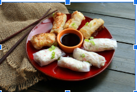

Rangoon Egg Rolls

Ingredients
Egg Rolls
8 oz cooked white crab meat
4 oz organic cream cheese
3 spring onions, finely sliced
Vietnamese rice paper squares
Sauce
1 tablespoon rice wine vinegar
Sesame seeds, for garnish
Red pepper flakes, for garnish
Instructions
Combine the crab meat with cream cheese, spring onions, garlic powder, and Worcestershire sauce in a mixing bowl. Season well with salt and white pepper.
Trim the rice paper squares into suitable squares (ours were 8.5 x 8.5 in, so we cut each one into 4 smaller squares, approx. 4 x 4 in each) and dip into a bowl of warm water – one at a time - as per the packet instructions.
Scoop a small amount of the crab mixture onto the lower half of the softened rice paper and tuck in the two sides. Roll the rice paper as you would when making a wrap or a spring roll and set aside. Repeat with the remaining mixture until you have made 16.